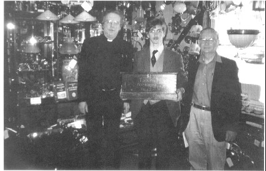
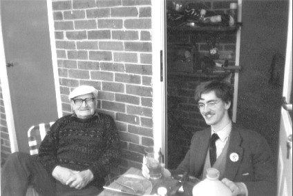

Rev Brookes, Mr B. J. Hardy and the Master of the Leeds Youths with the repurchased handbells.
Well, I had always hoped that we might one day retrieve these bells, so it was a glorious day when Rev David Brookes ascended the belfry one Saturday in early 2003 to pass us payment for the Wedding ringing we were about to perform, and to inform me that a friend of his had discovered what he believed were our bells in an Antique shop in Hungerford. Pictures were quickly emailed from the proprietor of the shop to Rev. Brookes, who went straightway to Mr Russell the Verger. He confirmed what we had all hoped "Yeah; they're the ones we used to ring". And so it was, that after passing a resolution at the PCC Meeting in May 2003, the Church Treasurer and I with Rev. Brookes driving, went to Hungerford and purchased the handbells. A splendid old set of 16 bells cast by William Dunn (one time Master of the St James's Society which became the London County Association, and has lately been revitalised under its original name) of London in c1840 - unusual in their hemispherical shape, and with a marvellous tone, were thus repurchased at a figure considerably exceeding 10/- but certainly at a very good price considering the quality of the bells alone - not even taking into account the local connection.

Mr Russell (Verger) and the ASELY Master enjoy a celebratory Roast Beef Dinner at Mr Russells house following the repurchase of the handbells
Upon return of the handbells to the village, much interest was stirred. Mrs Griffiths of Leeds Church Choir remembered that the bells had been used in Hollingbourne Village in the 1970's by the grandson of the fellow who had bought them in the 1930's, and that the Scout troop in Hollingbourne had practised and performed a very...... entertaining! rendition upon them.
Once Rev. Brookes had investigated the bells and accounted for them all, I took them along to Mr Russell, the Verger and we had a brief practice on them in his front room. Following this, it was resolved that the bells should be locked in a large chest in the Parish Room, and I repaired the mediaeval locks on said chest and deposited the bells therein for safekeeping.
The members of the Leeds Society of Handbell Ringers hold to the commitment which Rev'd Brookes and I made: "That the monies raised by our ringing of the handbells shall go towards defraying the total cost of the purchase of the Handbells, which was wisely and kindly agreed by the PCC in May 2003".
FACTA NON VERBA
Photographs of the Leeds Handbells

11 12 13 14 15 16

6 7 8 9 10

1 2 3 4 5

All the 16 bells

All the 16 bells

16-15

14-13

12-11

10-9

8-7

6-5

4-3

2-1